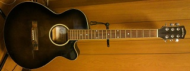
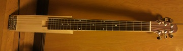

静音ギターの製作（失敗編）
2011年12月12日 カテゴリー：ギター関係
アコースティックギターを夜練習するのは無理なので静音ギターを作ってみようと思い立ちました。
とりあえずネックをということでジャンク品のSepia Crue EAW-180（下写真）を入手しました。

ロトマチックペグがついていたり、サドル下にピエゾピックアップがついていたりとお買い得だったと思います。ネックの太さは普通でトラスロッドも効いているようです。
そして弦を一回も張ることのないままノコギリで切り刻み、ネック部分を取り出しました。そしてホームセンターで買ったホワイトウッドという木につけてみました（下写真）。せっかくなのでヘッドを小さく加工しています。

しかしながら、これだとバランスが悪くてヘッド落ちがひどい状態になりました。太ももに当たる部分や腕が当たる部分に木のウイングをつけてみましたが全然ダメです。ヤマハのサイレントギターは大丈夫なのかな…
というわけで大改造してアリアのシンソニードみたいにブリッジ側にペグをつけてみることにします。